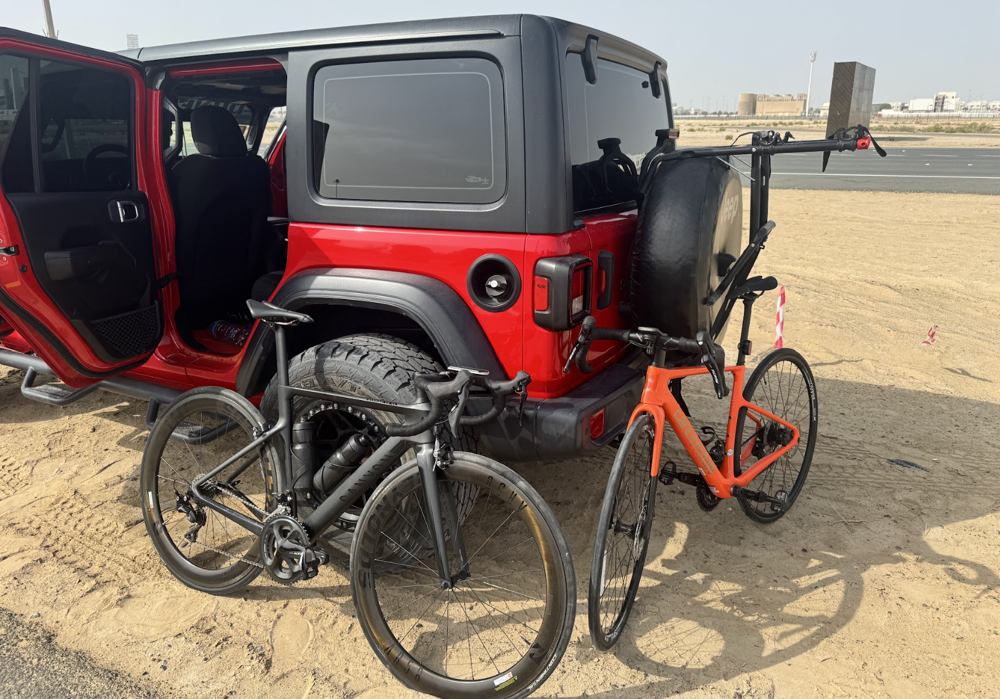
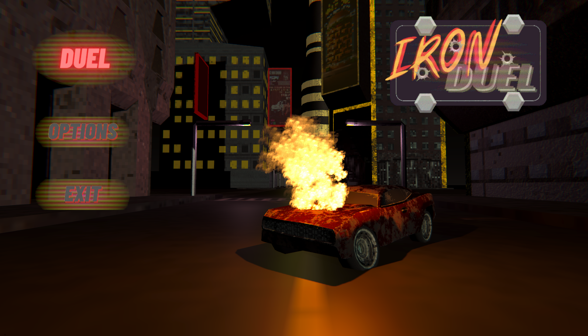
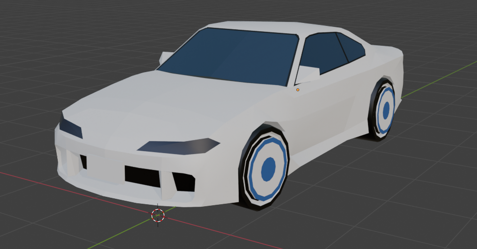
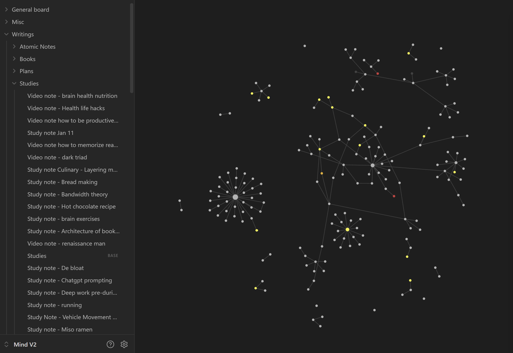

About Me
Beyond Coding
This section highlights the hobbies that shape how I think, create, and stay consistent outside of software work.
About Me
This section highlights the hobbies that shape how I think, create, and stay consistent outside of software work.
Hobby 01
I aim to improve my VO2 max and overall endurance through regular training and participation in local cycling events.

Hobby 02
I enjoy creating modularized systems, such as compartmentalized game mechanics, alongside experimenting with physics.

Hobby 03
I practice 3D modeling and drawing, mainly vehicles and props, as those aid with game development.

Hobby 04
I use Obsidian mainly for connecting concepts, and learning how they relate across different projects and ideas.
